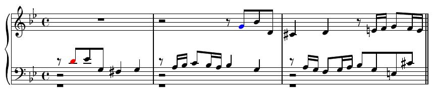

Baroko vs. Klasicismus
Rozdíly a změny v oblasti hudby v kontextu ostatních forem umění
Jan Černohorský
Hlavní myšlenka
Baroko
Bůh, náboženství, duše
Klasicismus
Rozum, racionalita, řád
Rysy
| Baroko | Klasicismus |
| Velkolepost | Jednoduchost |
| Rozevlátost | Umírněnost |
| Bohatost | Řád |
| Dynamika | Strohost |
Baroko
- monumentální
- vzbuzuje emoce
- vzbuzuje pokoru
- složitější
- stále polyfonie - více různých meolodií
- neměnné tempo
- stupňovitá dynamika - f, mf, p
- tóniny - církevní → durové
Fuga

- složitější canon
- jedno téma se opakuje a rozvíjí
Opera
- vznik v Itálii
- ~ 1600
- i jinde italsky
- Johann Sebastian Bach
- Antonio Vivaldi
- Georg Friedrich Händel
- ...
Klasicismus
- uměřená
- jednodušší
- pravidelný rytmus
- srozumitelná
- homofonie - jedna melodie
- pravidla
- zesilování a zeslabování -
- rozložené akordy, stupnice
Hudební formy
- cyklická sonáta
- koncert
- opera
Joesph Haydn
Wolfgang Amadeus Mozart
Ludwig van Beethoven
...
Použitá literatura
- DUNOVSKÁ, Jaroslava. Baroko. Poděbrady, 2019.
- DUNOVSKÁ, Jaroslava. Klasicismus. Poděbrady, 2019.
- Baroko. In: Wikipedia: the free encyclopedia [online]. San Francisco (CA): Wikimedia Foundation, 2001- [cit. 2020-01-15]. Dostupné z: https://cs.wikipedia.org/wiki/Baroko
- Klasicismus. In: Wikipedia: the free encyclopedia [online]. San Francisco (CA): Wikimedia Foundation, 2001- [cit. 2020-01-15]. Dostupné z: https://cs.wikipedia.org/wiki/Klasicismus
Obrázky
- https://www.worldatlas.com/r/w1200-h701-c1200x701/upload/09/1e/33/640px-1710-15-de-matteis-triumph-of-the-immaculate-anagoria.jpg
- https://upload.wikimedia.org/wikipedia/commons/7/71/Brandenburger_Tor_2005_006.JPG?uselang=cs
- https://upload.wikimedia.org/wikipedia/commons/2/21/%C3%89glise_de_la_Madeleine_2907x2028.jpg
- https://upload.wikimedia.org/wikipedia/commons/3/31/Olm%C3%BCtz-Dreifaltigkeitss%C3%A4ule2.jpg
- https://upload.wikimedia.org/wikipedia/commons/9/9a/K626_Requiem_Mozart.jpg
- https://www.klastervyssibrod.cz/_d/Vysebrodske-varhany.jpg
- http://www.msjankolova.eu/wp-content/uploads/2016/01/11001759_914440708587210_9080262166484173136_n.jpg
- https://upload.wikimedia.org/wikipedia/commons/thumb/c/c5/Clavecin_flamand.png/220px-Clavecin_flamand.png
- https://cs.wikipedia.org/wiki/Fuga#/media/Soubor:Ricercare_a_6_from_The_Musical_Offering.jpg
- https://upload.wikimedia.org/wikipedia/commons/9/9a/Respuesta_tonal_en_la_fuga.jpg
- http://i.hurimg.com/i/hdn/75/0x0/5d494fe2eb10bb2e385ea9a4.jpg
- https://cs.wikipedia.org/wiki/Barokn%C3%AD_hudba#/media/Soubor:Bach.jpg
- https://cs.wikipedia.org/wiki/Antonio_Vivaldi#/media/Soubor:Vivaldi.jpg
- https://www.fileformat.info/info/unicode/char/1d193/musical_symbol_decrescendo.png
- https://www.fileformat.info/info/unicode/char/1d192/musical_symbol_crescendo.png
- https://cdn.pixabay.com/photo/2016/07/11/01/26/piano-1508912_960_720.jpg
- https://www.scienceabc.com/wp-content/uploads/2016/06/Zubin-metha-and-Israel-Phil-Orc-Mar-2014.jpg
- https://www.clarino.de/typo3temp/pics/870f187696.jpg